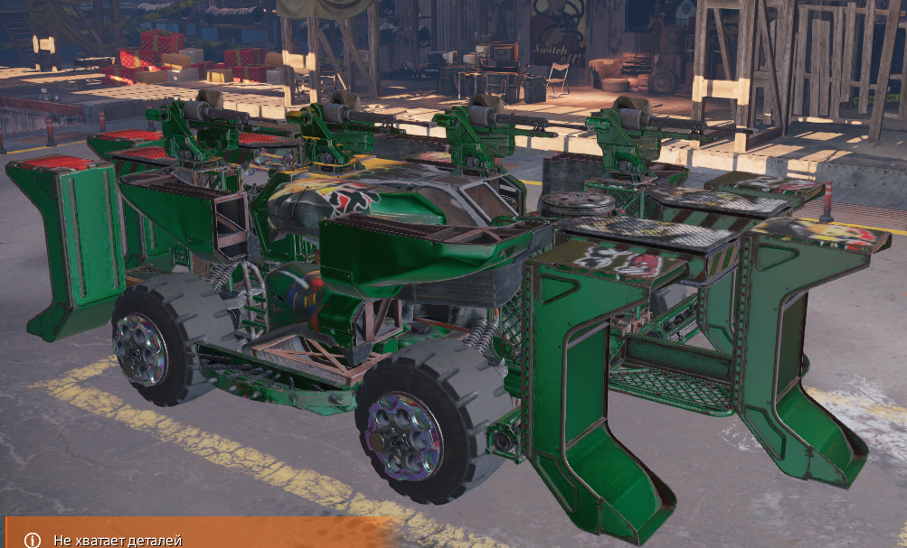
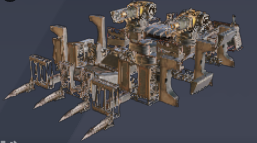
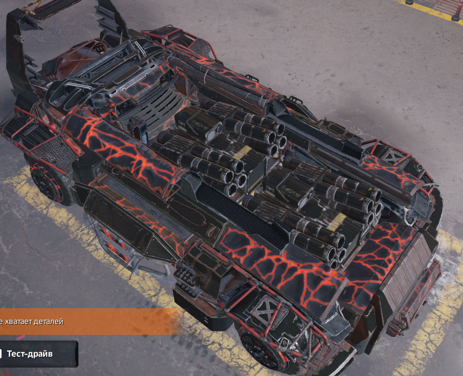
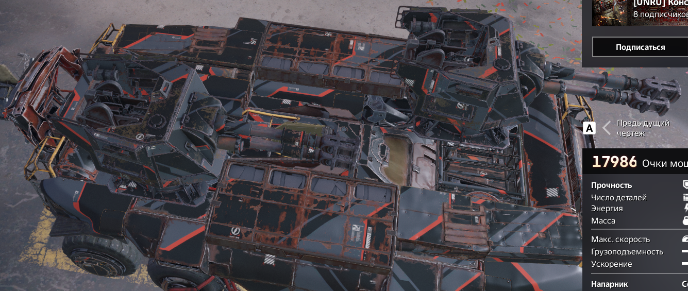
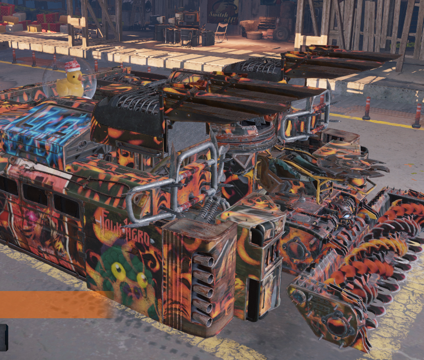
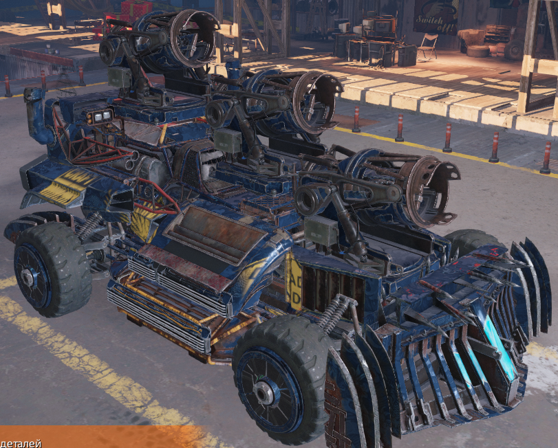
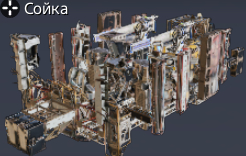

даное оружее требует быстрых кравтов на средней и близкой дистанцыии на средних и лёгких кабинах, фронтальные типы требуют бункерные кравты ,также этот тип оружея можно ставить под кабину (жнецы и мельники я отнёс к пушкам) 
даное оружее требует кравтов на средней и дальней дистанцыи кабины любые по перкам восновном средние ходовые также разные лутше всего потходят ховеры и гериды а также роликонесущяя ходовая

самоноводящиеся ракеты требуют большой дистанцыи на любой кабине и ходовой обычные ракеты я отношу к автопушкам

пушки неповоротные лутше ставить но ноги или ховеры(роликонесущие и шнеки)на тежолые и средние кравты а поворотные на любую хобовую с средими и тяжолыми кравтами

контактное оружее ставят на быстрые машины и на тяжолые но быстрые мошины а огнемёта и гранатамёты только но тяжолые бункерные кравты .,все мили кравты строят на колёсах и гусеницах

предпочитают лёгкие кравты но дольней дистанцыи запускоть дроны и снаряды в гущю сабытий

здесь аружее предпочитает среднюю дистанцыю а крюк и стая вспомогательное оружее ходовая ноги и ховеры и на ховерах и колёсах хорошо играются гранатомёты.
